GOOH · Screen gallery · 57 designs mapped
Every screen, in its place.
All 57 existing GOOH screen designs, ordered by where they sit in the new structure. Each carries a one-line note explaining why it lives where it does. Read top to bottom as a journey through the product.
01 · Home
The landing surface.
Home is the morning view, the dashboard, the "what needs me today" surface. None of the existing 57 screens are Home views, which is itself a finding: the dashboard is the single biggest gap in the current product. Worth flagging for the next design sprint.
02 · Clients → Brand Kit
The brand's visual constitution.
Everything client-specific lives here. The Brand Kit is the deepest part of the product, where Identity, Training and Monitoring combine into a single living spec that every campaign draws from.

GOOH_015
Clients · Brand Kit · Identity
Heineken Brand Kit · full view
Identity, training data and rules in a single editor. This is the canonical Brand Kit shape and the visual the whole product is anchored to.

GOOH_025
Clients · Brand Kit · Identity
Al Baik Brand Kit · v2.4
The same shape applied to a culturally specific brand. Shows how brand rules, photography style and compliance overrides all flow from a single source.

GOOH_072
Clients · Brand Kit · Identity
Team Falcons Brand Kit · v1.8
A sports brand Brand Kit. Same architecture, different domain. Proves the Brand Kit pattern scales across product categories.

GOOH_018
Clients · Brand Kit · Training
Style Playground
One source becomes eight photographic styles via the trained LoRA. This is the training layer made tangible. Cross-style consistency tracked at 96.8%.
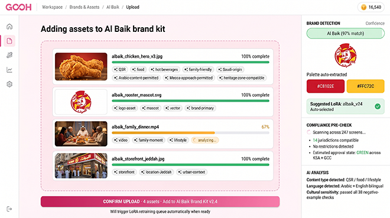
GOOH_022
Clients · Brand Kit · Training
Adding assets to a Brand Kit
Upload with auto-tagging, palette extraction and compliance pre-check. This is an action, not a destination. It's a button inside Training, not a sidebar item.
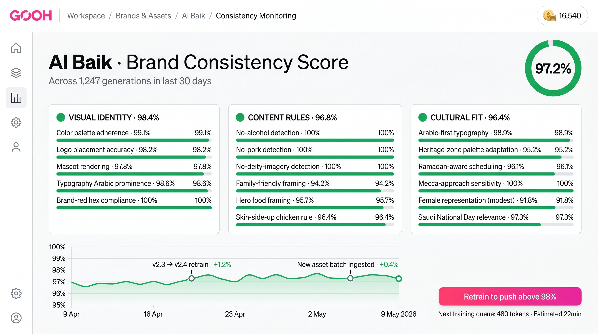
GOOH_021
Clients · Brand Kit · Monitoring
Brand Consistency Score · Al Baik
97.2% across 1,247 generations. Visual identity, content rules and cultural fit scored independently. This is what Monitoring looks like at scale.

GOOH_023
Clients · Brand Kit · Monitoring
Jurisdictional Strategy Map
Per-region rules and auto-substitutions. Brand-specific compliance overrides live here, because they're properties of the brand, not the campaign.
03 · Campaigns → Creative
Make the master.
The first stage of campaign work. Generate creates, Composite assembles, Adapt makes versions, Preview lets you check before sign-off. Adapt is where the old "Formats Workshop" and "Language Variants" merge into one job.

GOOH_008
Campaigns · Creative · Adapt
Nike Trail Series · Format adaptation
One source becomes 18 formats. Standard ratios, OOH screen variants, digital banners. This is Adapt at its purest: take one master, make it work everywhere.
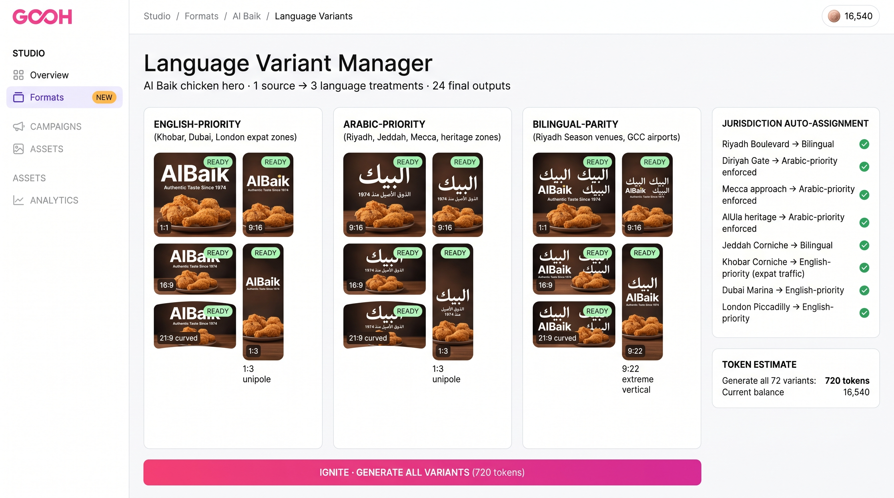
GOOH_020
Campaigns · Creative · Adapt
Language Variant Manager · Al Baik
One source becomes 3 language treatments and 24 final outputs. With jurisdiction auto-assignment. This is the same Adapt surface, language axis instead of format axis.

GOOH_069
Campaigns · Creative · Adapt
PIF · 7 language treatments
English-priority, Arabic-priority, French, German, Japanese. Routed by jurisdiction automatically. Sovereign-wealth brand going global, handled in one Adapt session.

GOOH_028
Campaigns · Creative · Adapt
Formats Workshop · Al Baik
Standard aspect ratios, OOH screens with site context, digital banners. The Adapt surface as a producer would use it for a full national rollout.

GOOH_033
Campaigns · Creative · Adapt
Esports Nations Cup · 24 formats
Sports brand at global scale. Same Adapt surface, different category. Generation status flows through the grid: ready, generating, queued.

GOOH_077
Campaigns · Creative · Adapt
Esports Nations Cup · Adapt alt view
A variant of the Adapt surface for the same campaign. Useful for design review to see the visual range within the same vocabulary.
04 · Campaigns → Media
Pick the screens.
Media is where the campaign gets matched to inventory. Map view for geographic planning, board view for grid-based selection. Same surface, view toggle inside. The drag-source pattern (drop creative onto the map) is the central interaction.

GOOH_007
Campaigns · Media · Map view
Heineken Global · Map view with compliance
Drag source onto a region. Compliance rail shows where it's permitted, restricted or blocked. Saudi Arabia blocked under GAMR Art. 13. This is the map view at its most powerful.

GOOH_006
Campaigns · Media · Board view
Heineken Global · Board view by region
Same campaign, board layout grouped by region. 24 placements across Europe, MENA, APAC. Status visible per placement. Toggle from map, same data.

GOOH_026
Campaigns · Media · Map view
Al Baik KSA · Tablet map view
The same Media surface on tablet, showing distribution mid-flow. Touch-first interaction for in-room reviews with clients. Same data, mobile context.

GOOH_029
Campaigns · Media · Map view (3D)
Al Baik · 3D placement view
A stylised 3D map view of KSA placements. Sensitive-zone protocols, heritage-palette overlays visible. The map view stretches to include 3D context.

GOOH_030
Campaigns · Media · Board view
Al Baik KSA · Board view grouped by region
24 placements across 5 KSA regions, Mecca approach flagged with sensitive-zone protocol. Status at a glance. The board pattern for national rollouts.
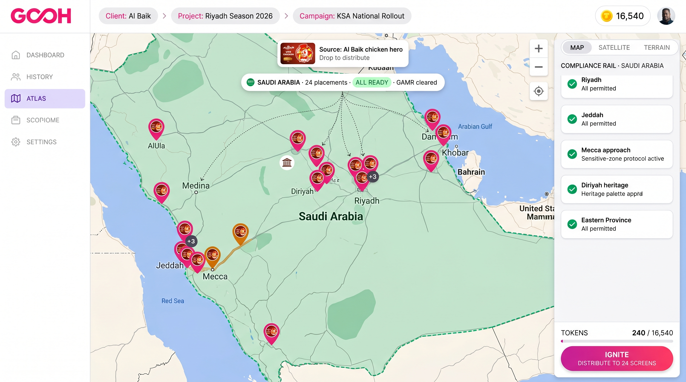
GOOH_031
Campaigns · Media · Map view
Al Baik · National rollout map
Source drag from the top, distribution flow into 24 placements across Saudi Arabia. All compliance rails green. The "all clear" state of the map view.

GOOH_032
Campaigns · Media · Map view
Team Falcons · Global ENC push
36 placements across 12 countries for the Esports Nations Cup. Compliance rail spans Saudi to Australia. The map view at full global scale.

GOOH_068
Campaigns · Media · Map view
PIF Worldwide Expansion · 22 placements
Source distributing globally for Davos 2026. Per-jurisdiction compliance rail with all 11 regulators green. The sovereign-wealth use case in full.
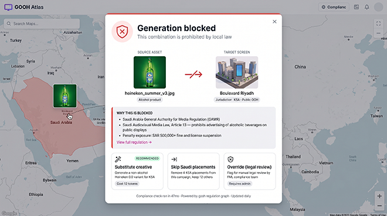
GOOH_016
Campaigns · Media · Compliance gate
Generation blocked · KSA alcohol
The compliance gate, surfaced from Strategy → Compliance into the Media flow. Three recovery actions: substitute, skip, or override with legal review.

GOOH_024
Campaigns · Media · Compliance gate
Generation cleared · 24 placements approved
The positive case of the same gate. Compliance evidence shown inline. Three forward actions: ship now, schedule, or open per-placement detail.

GOOH_066
Campaigns · Media · Compliance gate
PIF Global · 18 placements cleared
The compliance gate scaled to a full global sovereign-brand campaign. UK ASA, US NYC DCA, EU MiFID II, Saudi GAMR all referenced. Production-grade evidence trail.
05 · Campaigns → Creative → Preview
See it in place.
Preview is where a producer sees the creative in its real spatial context, on each specific screen, with the jurisdiction rules and screen specs alongside. This is the most-populated surface in the existing designs, and it's the demo magic of the product. The same surface holds both the master Brand Kit content (Heineken) and the campaign-specific work (PIF, ENC, Falcons, etc).

GOOH_005
Campaigns · Creative · Preview
Piccadilly Lights · Heineken
21:9 curved with source, variations and jurisdiction info. The canonical Preview layout: render in context, screen spec right rail, availability calendar.

GOOH_009
Campaigns · Creative · Preview
Piccadilly Lights · pedestrian POV
Same screen, pedestrian street-level point of view. Camera mode toggle (Aerial / POV / Sat / Cine / Cam) sits inside Preview as a control, not a destination.
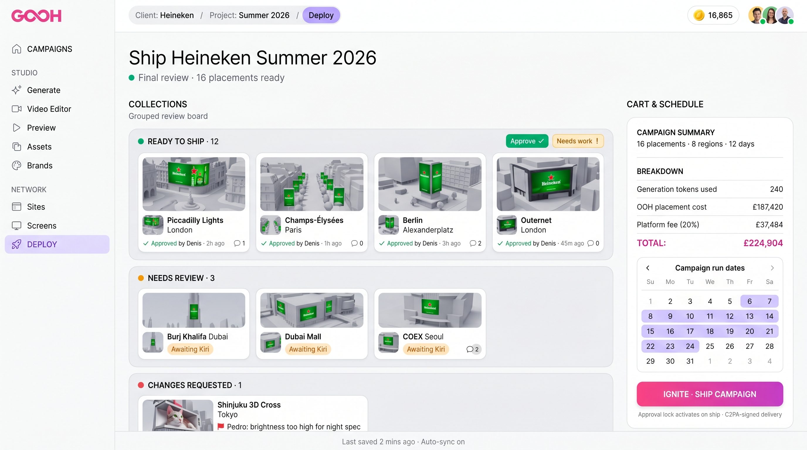
GOOH_004
Campaigns · Deploy · Review
Heineken Summer 2026 · final review
The Deploy Review board. 16 placements grouped by status: ready to ship, needs review, changes requested. This is the per-screen approval surface.

GOOH_010
Campaigns · Creative · Preview
Sphere Las Vegas · Heineken cinematic
Spherical UV mapping for the Sphere geometry. Geometry notes panel for the technical detail that wraps each render. Format-specific Preview at its most extreme.

GOOH_011
Campaigns · Creative · Preview
COEX K-Pop Square Seoul · Heineken
L-corner anamorphic with dual-plane UV mapping, break-out effect rendered via FMLSTMapRemap. Asia-specific format treated with the same Preview vocabulary.

GOOH_014
Campaigns · Creative · Preview
Burj Khalifa · vertical takeover
2048×10240 vertical strip, alcohol restricted with disclaimer required. Amber-alert state visible. Compliance evidence presented alongside the render.

GOOH_017
Campaigns · Creative · Preview
Outernet London · 5-face immersive
23×16×16m immersive cube interior with cross-face UV continuity. The most technical preview in the set. Geometry notes carry the production detail.

GOOH_034
Campaigns · Creative · Preview
Boulevard Riyadh · ENC vertical
9:22 extreme vertical for Saudi Esports Federation home venue. Riyadh Season tier confirmed. The Preview surface adapted to an esports brand context.

GOOH_035
Campaigns · Creative · Preview
Piccadilly Lights · ENC curved 21:9
Same Piccadilly screen, different campaign. Shows how the Preview surface is fully content-agnostic. The screen is fixed, the creative changes.

GOOH_036
Campaigns · Creative · Preview
TSX Times Square · ENC curved
12000×4000 curved 21:9 at Broadway. NYC DCA reviewed. Right-rail format and the US-specific compliance lineage all in one Preview.

GOOH_037
Campaigns · Creative · Preview
Sphere Vegas · ENC spherical
Esports brand on spherical geometry, 14-day countdown overlay. Same screen as Heineken (GOOH_010), demonstrating the Preview surface working across categories.

GOOH_038
Campaigns · Creative · Preview
Outernet London · ENC immersive
5-face cube takeover for the Esports Nations Cup. Coordinated multi-face content with cross-face alignment. Most ambitious immersive in the set.

GOOH_039
Campaigns · Creative · Preview
Champs-Élysées · ENC landscape
French-language priority enforced under Loi Toubon. Compliance lineage carries through into the Preview as right-rail context.

GOOH_040
Campaigns · Creative · Preview
La Défense · ENC vertical
Business district premium tier. 1536×6144 vertical 1:4 with Mairie de Puteaux permit attached. Second French site, same compliance vocabulary.

GOOH_041
Campaigns · Creative · Preview
Alexanderplatz Berlin · ENC ultrawide
7680×2160 21:9 curved ultrawide. Berlin Senat media permit confirmed. German-language variant visible. Cross-jurisdiction Preview as a single shape.

GOOH_042
Campaigns · Creative · Preview
Shibuya Q-Front · ENC 32:9 ultrawide
10880×2160 at the scramble crossing. Japanese localisation enforced. The Preview surface handling the global scramble of placements at one of the world's busiest screens.

GOOH_043
Campaigns · Creative · Preview
Hudson Yards · ENC 32:9 panoramic
11520×2160 panoramic at premium NYC venue. The Preview format library showing American-scale screens alongside European and Asian formats.

GOOH_044
Campaigns · Creative · Preview
Avenida Paulista São Paulo · ENC vertical
2160×5280 extreme vertical. Prefeitura São Paulo permit. Portuguese localisation enforced. The Preview pattern extending into LATAM context.

GOOH_045
Campaigns · Creative · Preview
Darling Harbour Sydney · ENC curved 21:9
7680×2160 with Sydney CBD Council permit. APAC reach completed. The full global Preview library across nine countries in a single campaign.

GOOH_046
Campaigns · Creative · Preview
SM Mall of Asia Globe · ENC spherical
8000×4000 equirectangular on an 18m radius spherical globe. Pasay City permit. Second spherical format in the library (after Sphere Vegas).

GOOH_047
Campaigns · Creative · Preview
Hongdae Seoul · ENC landscape
6144×3456 16:9 landscape. Youth-culture venue tier. Korean localisation in place. The full Preview library across both COEX corporate and Hongdae cultural Seoul sites.
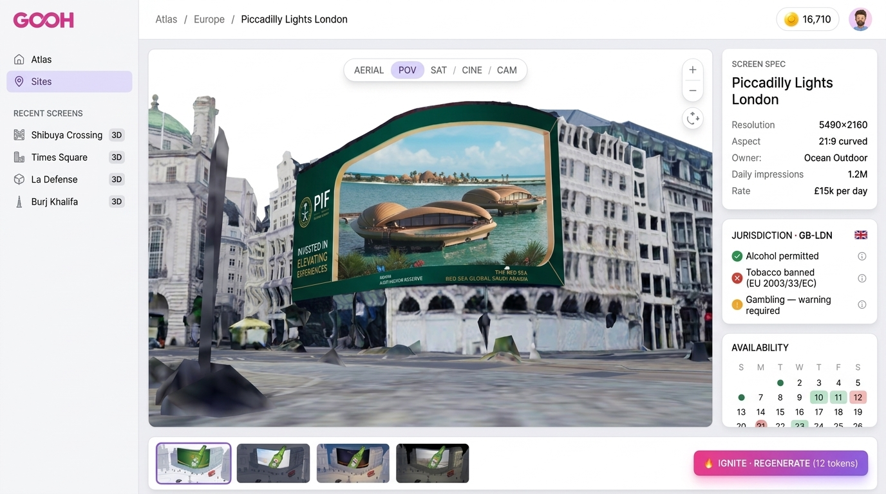
GOOH_078
Campaigns · Creative · Preview
Piccadilly Lights · PIF Red Sea variant
Same Piccadilly screen rendered with a Red Sea Global creative for PIF. Demonstrates how a single Preview surface holds a brand's full creative range.
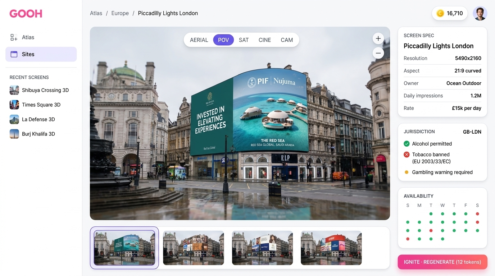
GOOH_079
Campaigns · Creative · Preview
Piccadilly Lights · PIF Nujuma photoreal
Photoreal Preview, same screen as the schematic above. The Preview surface scales from production wireframe to photoreal mock-up without changing shape.
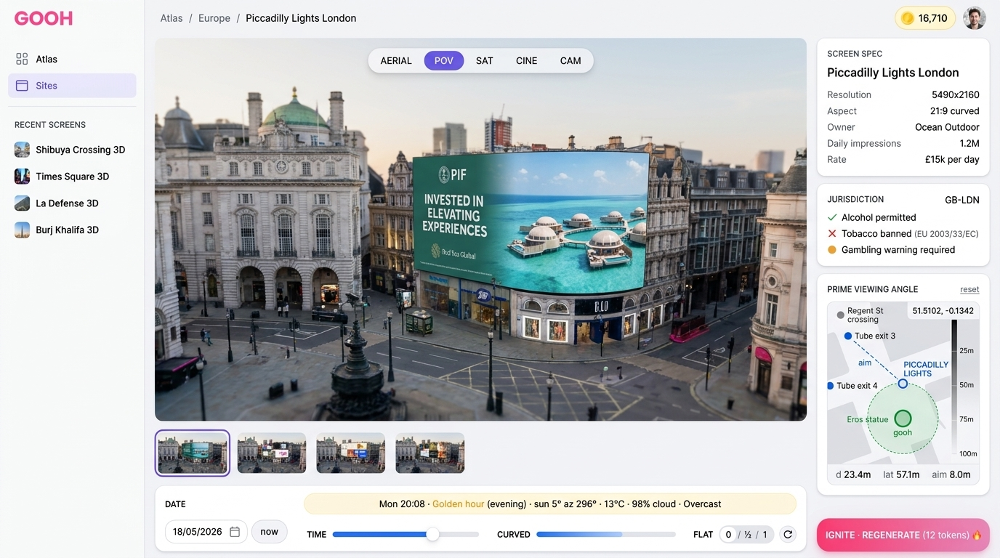
GOOH_080
Campaigns · Creative · Preview
Piccadilly Lights · PIF golden hour
Time-of-day, weather, and prime viewing angle all surfaced as Preview controls. Curved/flat slider, date scrubber, render trigger. The Preview surface at its richest.
06 · Campaigns → Deploy
Review and ship.
Deploy is the last stage of campaign work. Review handles per-screen sign-off with the live render map folded in as a view. Ship pushes everything live in a single deploy window. The campaign summary, schedule and cost breakdown sit alongside.
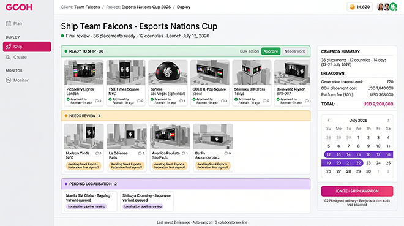
GOOH_048
Campaigns · Deploy · Ship
Team Falcons ENC · Ship board
36 placements across 12 countries, ready to ship, needs review, pending localisation. Campaign summary, schedule and USD 2.2M cost breakdown alongside.
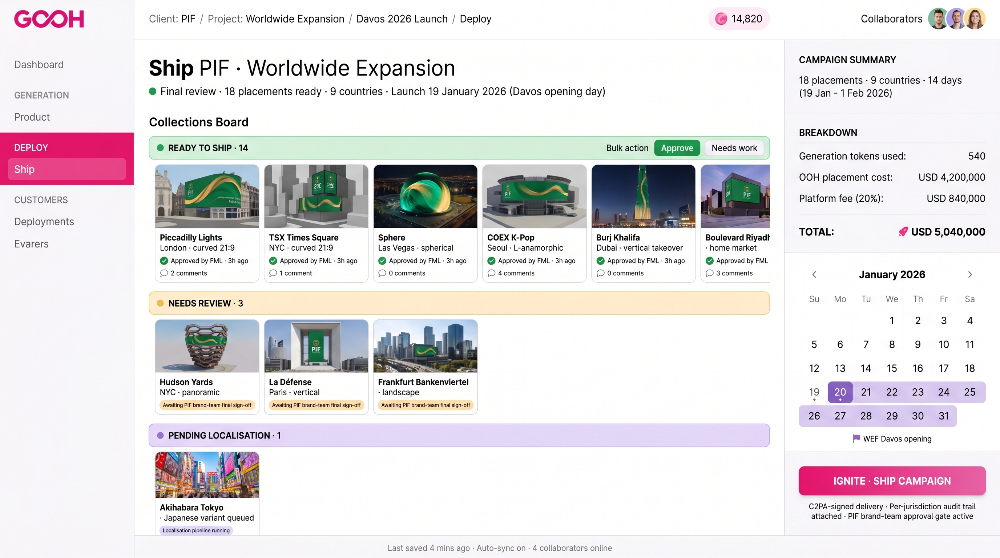
GOOH_067
Campaigns · Deploy · Ship
PIF Worldwide Expansion · Ship
18 placements, 9 countries, Davos 2026 launch. USD 5M total. C2PA-signed delivery with per-jurisdiction audit trail. The Ship surface at its most production-grade.

GOOH_019
Campaigns · Deploy · Review (Live Render)
Al Baik · Live render map
8 of 24 rendered, 12 rendering, 4 queued. Live activity log alongside. This is the map view inside Review, not a separate destination. View toggle, not nav item.
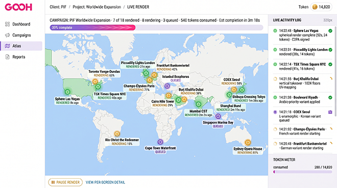
GOOH_075
Campaigns · Deploy · Review (Live Render)
PIF Worldwide · Live render global
7 of 18 rendered globally. Per-screen status across continents. The Live Render Map at full PIF scale, sitting inside Review as a view toggle.
07 · Strategy
The thinking layer.
Strategy is the senior-user surface for Insights and Compliance. In the current 57-image set this is mostly empty, which is itself the finding: the Strategy surface is underbuilt relative to the operational core. Sites and Screens (Compliance → Inventory) is the one piece that exists today.
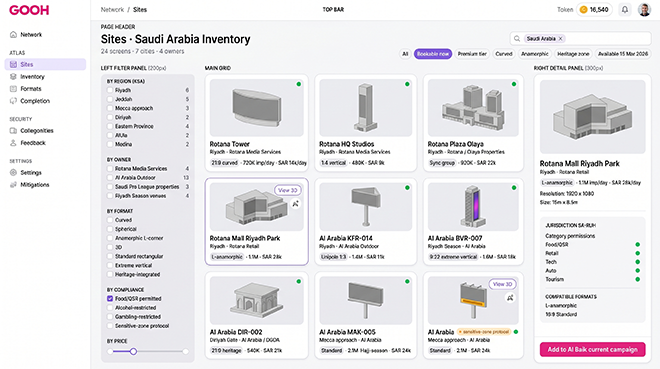
GOOH_027
Strategy · Compliance · Inventory
Sites · Saudi Arabia Inventory
24 screens, 7 cities, 4 owners. Filterable by region, owner, format, compliance category. The screen estate as a browseable database. The clearest existing Strategy surface.
08 · Out of nav
Different product modes.
Two of the screens point at GOOH being operated headlessly via Claude/MCP, and two are presentation slides for sell-in. These don't sit in the user-facing nav but they matter as positioning. The MCP angle is worth a real conversation with Denis on whether it's near-term or longer-term direction.

GOOH_013
Out of nav · API/MCP layer
Claude × gooh · Heineken Valentine's booking
Natural language booking via Claude/MCP. Book Heineken on Piccadilly, Outernet, Sphere for Feb 14. Different product mode entirely. Worth Denis's view on positioning.

GOOH_073
Out of nav · API/MCP layer
Claude × gooh · PIF global rollout
18 placements, 9 countries, 7 languages, USD 5M booked via natural language. The headless mode scaled to a sovereign brand. Sales narrative or product roadmap?

GOOH_070
Out of nav · Sell-in deck
One platform. Three Saudi sovereign brands.
Sell-in slide for the Saudi-out positioning. PIF, ENC, Team Falcons orchestrated through gooh. Sits in pitch material, not the product UI.

GOOH_076
Out of nav · Sell-in deck
Saudi-out · the next decade of OOH
The closing slide of the sell-in deck. Origin Riyadh, fanning out to 13 countries. 68 placements, 7 languages, one deploy window. Positioning, not product.